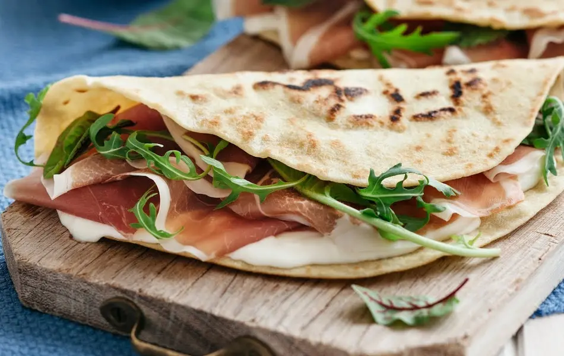

Piadina Romagnola

Description
A flat bread from the Italian region Romagna. Great with arugula and soft cheese (Squacquerone is the one typically used) or cold cuts and a glass of Sangiovese Superiore di Romagna from Forli'. The dough can sit at 40 degrees F (4 degrees C) up to 2 days.
Ingredients
- 3/4 cup milk
- half cup margarine, at room temperature
- half cup Greek yogurt
- 3,5 cups all-purpose flour
- 1 tablespoon salt
- 1 tablespoon baking powder
- 1 egg white
Steps
- Stir the milk, margarine, and yogurt together in a bowl.
- Mix the flour, salt, baking powder, and egg white in a large bowl. Pour the milk mixture into the flour mixture and work the mixture together with your hands until the dough separates from the sides of the bowl, adding flour or water as needed to get the right consistency, which will be neither sticky nor dry. Cover with a damp cloth and let stand at room temperature for 30 minutes.
- Turn the dough out onto a lightly floured surface; divide into 12 pieces and roll into balls. Roll and stretch each ball to about 1/8-inch thick and 8 inches in diameter.
- Lightly oil a cast iron skillet and place over medium-low heat. Cook the dough in the hot skillet until it begins to set, 1 to 2 minutes per side. Pierce the dough with a fork 3 to 4 times while it cooks. Wrap the finished pieces in a towel until ready to serve.